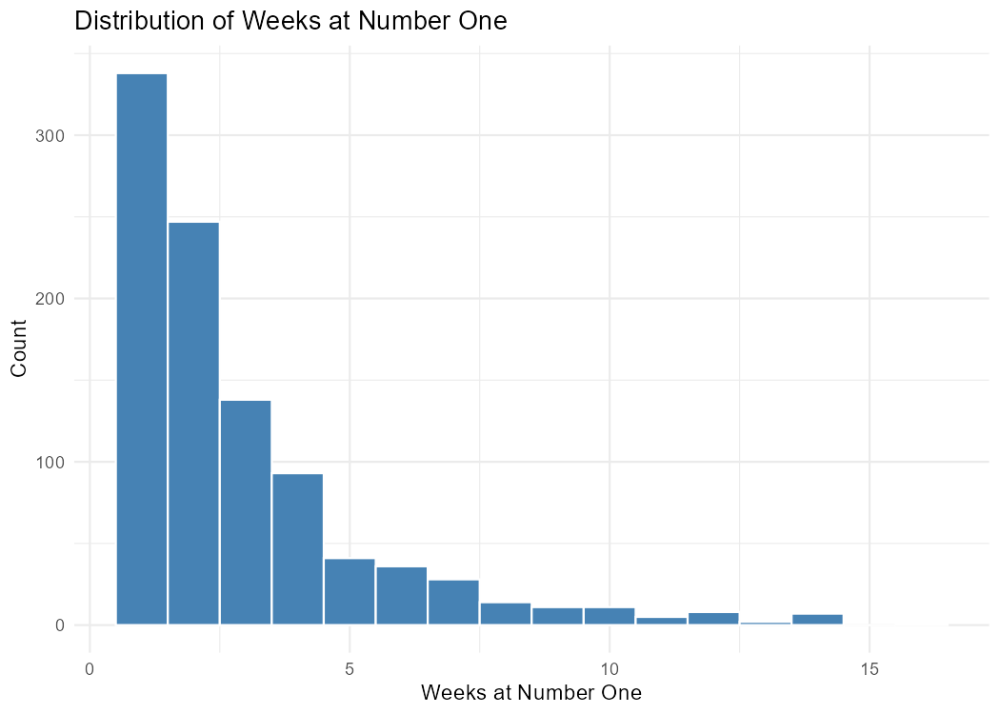
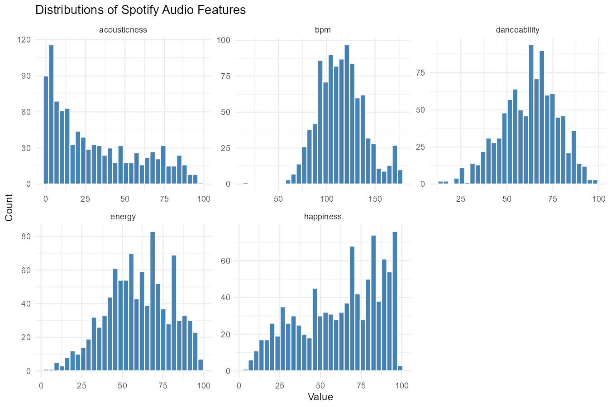
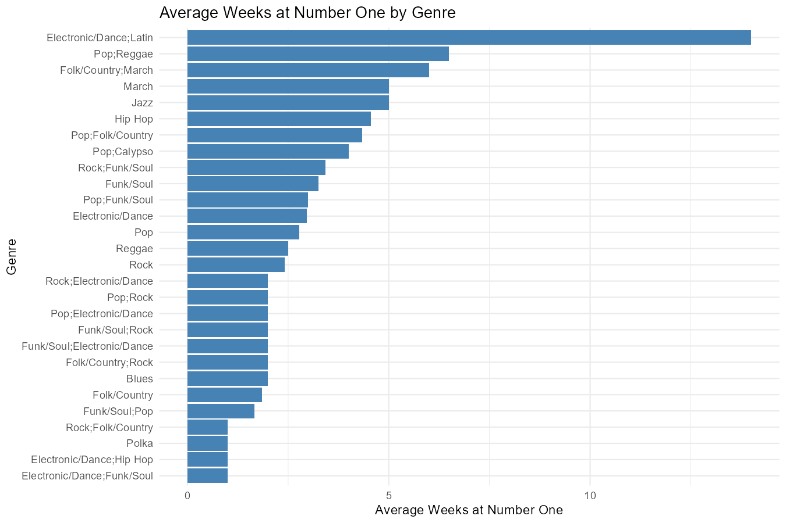
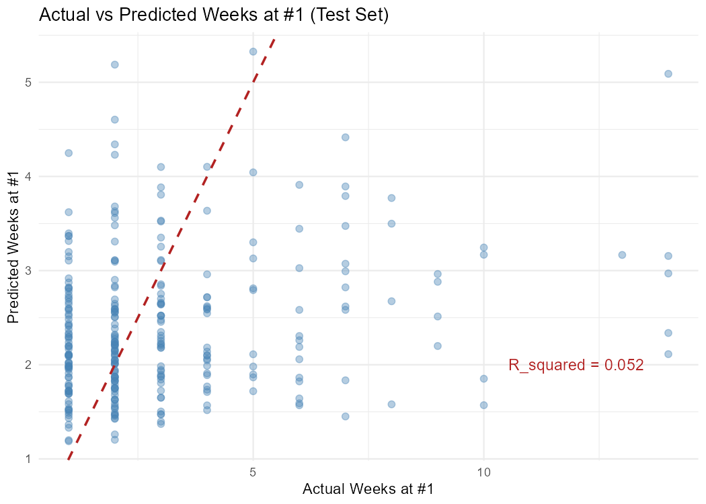
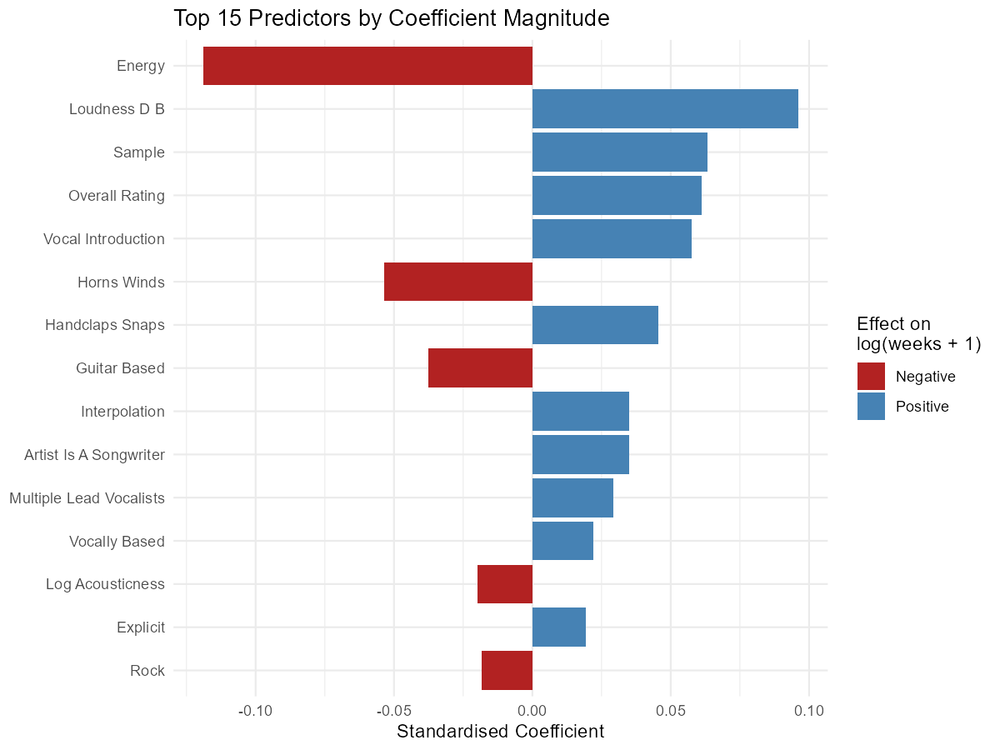

May Eindra Tet Toe, Anastasia Tountas, Tran Anh Thu Phung, Harry Nguyen
Published
March 21, 2026
1 Summary
The objective of this analysis is to use publicly available song information from the Billboard Hot 100 song rankings to investigate the question:
Given various metrics about a song (energy, beats per minute, etc.), how many weeks, if any, will a song remain at the top position in the Billboard Hot 100 rankings? Which features contribute most to our model’s predictions?
2 Introduction
The magazine “Billboard” is a leading source of information on trends in music popularity and innovation. Following the launch of the magazine in 1958, weekly rankings of the top 100 songs in the US have been made publicly available (Billboard Staff 2011). The dataset that we have selected is open-source Tidy Tuesday (Data Science Learning Community 2025) dataset which documents these billboard rankings from August 4th 1958, until January 11th 2025. It provides features such as lyrics, song-structure, and featured_artists for each song in the ranking. These features can then be used for song popularity predictions or music trend forecasting. In this analysis, we use linear regression to predict the number of weeks a song remains at the #1 spot in the rankings, and assess our model’s performance using RMSE, MAE and \(R^2\). Even though our results show that our regressor has a weak performance, information regarding feature importances in model decision-making remain useful in determining a song’s overall popularity.
3 Methods and Results
3.1 Overview of our Methodology
The Billboard Hot 100 dataset provides us with two datasets: billboard.csv, which contains one row per song that reached #1 along with its features, and topics.csv, a reference list of lyrical theme labels (lyrical_topics). Our team decided to combine the two datasets to create more comprehensive data to better equip our model. Here is an overview of our data analysis methodology:
Reading & Wrangling: Read and wrangle the dataset into one tidy combined dataset.
Exploratory Data Analysis: Explore the data to understand the distribution of features and their relationships with the target variable.
Feature Transformations & Selection: Apply log transformation to skewed variables, one-hot encode cdr_genre, and collapse simplified_key into three categories. Drop irrelevant columns and use near-zero variance filtering.
Model Building & Evaluation: Split the data 70/30, fit an ordinary least squares model using a tidymodels workflow. Evaluate the model using repeated 5-fold cross-validation and test set metrics (RMSE, \(R^2\), MAE).
Results and Conclusion: Summarize findings, discuss implications, and suggest potential future work.
3.2 Exploratory Data Analysis
Summary statistics for the target and key predictors:
knitr::kable(read.csv("../results/tables/summary_stats.csv"), caption ="Table 1: Summary statistics for target and key predictors.")
Table 1: Summary statistics for target and key predictors.
Variable
Mean
SD
Min
Median
Max
acousticness
31.51
27.66
0
23.00
98
bpm
115.50
23.69
16
115.00
176
danceability
62.45
15.21
14
64.00
98
energy
59.81
19.62
3
60.50
98
front_person_age
27.97
6.51
11
27.50
62
happiness
62.60
24.96
4
68.00
99
length_sec
222.88
50.12
96
224.00
515
loudness_d_b
-9.02
3.40
-23
-9.00
-1
overall_rating
6.18
1.86
1
6.33
10
weeks_at_number_one
2.91
2.49
1
2.00
16
Distribution of weeks at number one:

Figure 1: Distribution of weeks at number one.
Distributions of the five Spotify audio features:

Figure 2: Distributions of the five Spotify audio features.
Average weeks at number one by genre:

Figure 3: Average weeks at number one by genre.
3.3 Feature Transformations & Selection
Log transformation applied to right-skewed variables (weeks_at_number_one, acousticness).
One-hot encoding for multi-label genres.
Collapsed musical keys into Major, Minor, and Multiple Keys.
Dropped redundant, high-cardinality, and ambiguous columns.
Removed near-zero variance predictors.
3.4 Modeling
Data split into training (70%) and testing (30%) sets.
Linear regression model built using tidymodels workflow.
Model evaluated with repeated 5-fold cross-validation and on the test set.
knitr::kable(read.csv("../results/tables/test_metrics.csv"), caption ="Table 3: Test set metrics (RMSE, R^2, MAE).")
Table 3: Test set metrics (RMSE, R^2, MAE).
.metric
.estimator
.estimate
rmse
standard
0.5016631
rsq
standard
0.0518325
mae
standard
0.3949391
Actual vs predicted weeks at number one (test set):

Figure 4: Actual vs predicted weeks at number one on the test set (original scale).
Top 15 predictors by standardized coefficient magnitude:

Figure 5: Top 15 predictors by standardized coefficient magnitude.
3.6 Result Interpretation
The linear regression model shows weak predictive performance for explaining the number of weeks a song remains at number one on the Billboard chart. Cross-validation produced an average \(R^2 = 0.063\) with RMSE = 0.505 and MAE = 0.415, while evaluation on the test set yielded similar results (\(R^2 = 0.052\), RMSE = 0.502, MAE = 0.395). The similarity between cross-validation and test metrics suggests that the model generalizes consistently and does not suffer from substantial overfitting. However, the low \(R^2\) values indicate that the predictors explain only a small portion of the variation in chart longevity.
The predicted versus actual plot further illustrates this limitation. Predictions tend to cluster around relatively low values regardless of the true outcome, indicating that the model struggles to capture songs that remain at number one for longer periods. Instead, the predictions gravitate toward the average, suggesting the model is unable to identify strong signals that distinguish highly successful songs from others.
Among the predictors, energy has the strongest standardized effect (\(\beta = -0.119, p < 0.001\)), indicating that lower-energy songs are associated with slightly longer duration at number one. Loudness (\(\beta = 0.096, p < 0.001\)) and overall rating (\(\beta = 0.061, p = 0.003\)) show positive and statistically significant relationships with chart longevity, suggesting that songs with stronger perceived production intensity and higher ratings may remain popular for longer periods. Some structural features such as vocal introduction and handclasps/snaps also show modest positive associations, while elements like horns/winds and guitar-based instrumentation show small negative effects.
However, most predictors are not statistically significant, indicating that these characteristics contribute little predictive signal once audio features are accounted for. Overall, these findings suggest that musical attributes alone are insufficient to explain how long a song remains at number one.
4 Discussion
The objective of our analysis was to use a linear regression model to predict the number of weeks a song would remain at the #1 spot of the Billboard Hot 100 song rankings (weeks_at_number_one) given open source data. Unnecessary features and features risking data-leakage into the predictive model were removed, and the skewed numerical features were transformed. One-hot encoding was applied on categorical features, including genre and musical key. Following this preprocessing, the linear regression model was trained and the predictions were compared to the ground truth of weeks at the #1 spot. We found that in spite of its limited predictive power, the model generalizes well onto unseen data due to the small difference between training and testing error, and that the top 3 statistically significant features involved in prediction were Energy, Loudness, and overall rating. From the coefficient values, we can conclude that weeks a song remains at the number one position is most associated with lower energy, higher loudness, and higher overall popularity.
Previous literature has also investigated song popularity with various models including KNN, linear regression, Random forest (and other tree-based models), and neural networks. Although these models have varying levels of predictive performance, song popularity is documented as a challenge to predict due to the nuanced level of the problem. Factors including individual preferences, globalization of music through various streaming platforms, and global events contribute to the challenge of measuring and influencing song popularity (Terroso-Saenz, Soto, and Muñoz 2023). Further, global music trends and top performing artists have shifted since the introduction of streaming platforms, and song lengths have decreased to adjust to preferences over time (Kim 2021; Terroso-Saenz, Soto, and Muñoz 2023). Since our analysis spans multiple decades, world events, and the adjustment of streaming platforms, these external factors could be influencing our \(R^2\) value and error metrics. This means that songs with popular characteristic features leading to a high number of weeks at the top position from the 1950’s or 60’s, may not generalize well to features from popular songs in the 21st century. Therefore, the low predictive power of our model was expected.
A specific example of classifier implementation was conducted by Kim in 2021. This study, similar to the present study, investigated the impact of various features contributing to song popularity from 2010-2019 using Spotify data, and analyzed the performance through the RMSE of logistic regression, KNN, and Random Forest models. The lowest RMSE score was associated with the logistic regression model, followed by KNN and Random forest (Kim 2021).
Overall, this regression model provides good predictions given the data, historical trends in music forecasting, and questions being investigated; in spite of its weak predictive patterns. It adds to previous literature, by implementing different features and conducting a longitudinal study. The impact of our results can be used to determine how trends in music have changed overtime. Based on our findings, improvements/future research quests can be made through training separate models for the data into the 20th vs the 21st century, or by decade, to improve performance; while retaining longitudinal nature.
5 References
All references will be automatically included here from references.bib.
Kim, J. 2021. “Music Popularity Prediction Through Data Analysis of Music’s Characteristics.”International Journal of Science Technology and Society 9 (5): 239. https://doi.org/10.11648/j.ijsts.20210905.16.
Terroso-Saenz, F., J. Soto, and A Muñoz. 2023. “Evolution of Global Music Trends: An Exploratory and Predictive Approach Based on Spotify Data.”Entertainment Computing 44. https://doi.org/10.1016/j.entcom.2022.100536.